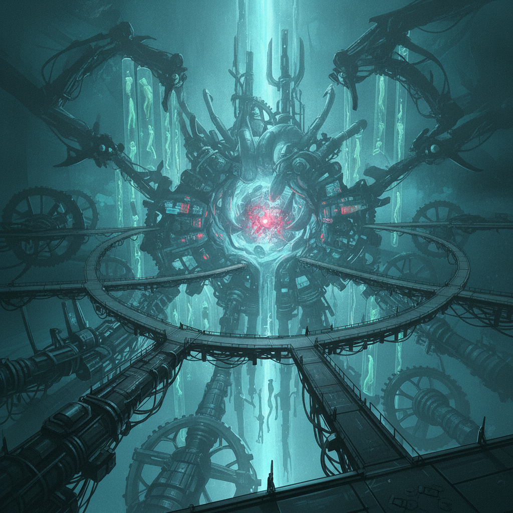

The Inner Sanctum throbs with monstrous energy, the blinding aether-core glare casting stark shadows across the engine-cathedral. This is the final battleground.
Isolde unleashes her Sela-strong weaves with devastating precision, each strike a testament to her chosen path. Her doubt is finally a weapon, not a burden.
The battle is a symphony of coordinated power. The enemy boss, a figure of twisted aether and dark ambition, is overwhelmed by the relentless assault. It falls, its power disintegrating into cold ash.
The thrum of the Governor-core dies down, leaving a ringing silence. We have won.